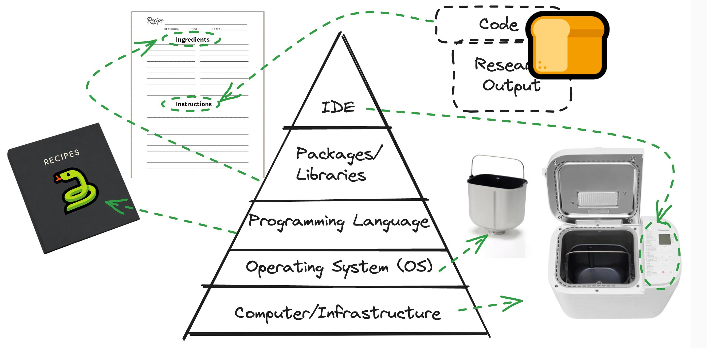

Joining the dots for modern data science workflows
State of the art workflows not just for Computer Scientists
The University of Auckland
July, 2024
What this is
- efficiently create a chain of our preferred tools to tackle a map visualisation part of a ficticious PhD
- ‘end-to-end’ with focus on Research Reproducibility
- Though geospatial example, but the tools and workflows are applicable to many research disciplines
Housekeeping üßπ
This is a taster/talking-head, not a hands-on session üó£Ô∏è
We only have one hour üïê but you can learn a lot
- We hand-picked the most relevant bits
- we ask you not to prepare lunch or read a book or message others, just honour our work and time by trying to stay as alert ‼️ as possible.
- Resources shared later, always prioritise following-along over note-taking, etc. üìù
- This session won‚Äôt be recorded üìπ
Cameras on, please üì∏
Please mute your microphone üé§
Questions later unless unavoidable now: Zoom chat üí¨
Be kind üòä
- all details of the Code of Conduct üóûÔ∏è can be found here
Recommendation
- Now, buckle up üèéÔ∏è
- try to follow me, this is a lot of content.
- we iterate over the same topic 3 times, each time with a different approach
Handling questions
- Probably very limited time for questions, but
- Drop-in Clinic (Tuesday/tomorrow, 3-4pm)
- HackyHour community and Slack channel (availble for all, not jut University of Auckland)
- Slides, repo, links shared afterwards
- pointers to relevant ResBaz sessions
- some might be full
- some might share slides on request, might(!)
Go, go, go! Wait, what?
- What of the covered parts matters most to you, depends on your research
- I share opinions/experiences/preferences.
- try to listen firstly; try it out; find your own solutions; share your findings/preferences/outputs with me later
- Focus is
- recent (not dated)
- relevant (to many research disciplines, not just research involving geospatial)
- chain of tools and adequate usage to
- facilitate your research
Goal: make your (research) lives easier
- Don‚Äôt reinvent the wheel üõû
- Use existing work IF ADEQUATE! (citing, data sensitivity, intellectual property, licenses, funding, … the list goes on!)
- Make it FAIR (Findable, Accessible, Interoperable, and Reusable) and benefit from that
- Focus on your research, not on learning tools
- keep Reproducibility in mind! Excellent resource here
Overview of the ficiticous project
- our project is part of a PhD project (usually 3-5 years runtime)
- 1 hour up to 3 years (or more?) and you can mix-and-match components
- We picked a geospatial example
- Why? Many can appreciate an enhanced map (other topics might require jargon, etc.)
- Even if your research does not invovle geospatial aspects: You are in the right session üòé It is about the process not so much the product
- For this project, we made sure that we are allowed to obtain/capture | posess and store | use | (work on with AI support) | publish as it is not senstivite.
- Parties that might have an influence: Ethics Committee, IP, Commerical Interest, Countries, supervisor,…
More details about data sensitivity, etc.
Recommended ResBaz sessions
- Just before this one: Managing Research Data (which just ran prior to this session;
- Potentially still available after this session:
- An introduction to cloud security for researchers
- Data Management Planning
- Health care data for research at the University of Auckland
- Using digital tools for transcription
- Research Data Collection & Surveys with REDCap: An Overview
- Tikanga, Māori Research Ethics and Māori Data Sovereignty
- Introduction to Qualtrics for Research Surveys
The workflow’s components - a Pyramid scheme
Component 1: the physical computer
- this can be many things
- your local laptop (don‚Äôt forget it on the bus üöå)
- your office computer üè¢
- your lab-groups‚Äô computer üî¨
- a Virtual Machine üì°
- 3 sentences about VMs
- we will use one in our project
- a cloud resource ☁️ (might be obfuscated, might be a server similar to a VM)
Component 2: the operating system
- Selected tools are maximised for
- being Operating System (OS) agnostic
- they should work on many systems
- some (!) trouble-shotting in aforementioned Drop-in Clinic or over Slack
Note
because of the way we interact with the core-coding task, we won’t see too much of the OS
Component 3: the programming language
- we will use Python üêç
- Python vs. R vs. C vs. Rust vs. JS, … is out of scope
- Try one of these sessions If your goal is…
(all these ResBaz session are running concurrently on Wed. 1-5pm)
Component 4: Libraries
- We will talk more about packages/libraries in due course
- For now: Python has a vast amount of libraries
- we will use GeoPandas among others
- efficiently handling these might appear daunting
- but we will show you some tricks
- many others have done this before!
Component 5: the programming environment
 We have two main appraoches
We have two main appraoches
command-line interface (aka CLI/terminal/console/shell/BaSH/ZSH/Fish/…):
- automatically, for ex. every night at 11pm (cron-job)
- chain one scripts output as an input to another script (build a pipeline)
Jupyter Notbooks, etc.:
- develop your code
- explore your data
- get interactivity
- run bits and pieces in Isolation
Option A: Command-line-based
- we can get a lot done by only using a CLI
- open a terminal locally or log in to a VM (via SSH, etc.)
- we can code in a text editor
Recommended ResBaz session
Introduction to the Command Line (Wed. 10am-3pm)
Option A in action
Option B: GUI-based; .py files
GUI = graphical user interface
- why do we use a GUI? To get help!
- syntax highlighting
- auto-complete
- potentially AI-support 1
- we can use our local computer (, , ) or x11/ rdp into a virtual machine
- there is again quite a variety
- I pick Visusal Studio Code (VSC), others use Jetbrains PyCharm, etc.
- VSCodium: open-source adaption without telemetry; no MS VS Marketplace but its own; at times less smooth
Option B - Jupyter Notebooks/.ipynb files:
- maximise the GUI-use: Jupyter Notebooks1
- Imagine a pharmacy-student’s lab notebook.
- There are some hard-facts (graphs, print-outs,…) and explanations around it
- in Jupyter, we can have code blocks, text blocks, images, …
- to beautify we can use
markdownsyntax- a different take than MS-Word cusor-highlight-text-to-bold approach
- to beautify we can use
- but: Why add explanations/metadata in the first place? - collaboration/colleagues need to know rationale/units [\(m\) vs \(mm\)] - future-you:
- again: FAIR and metadata, utlimately: get more research impact
Option B in action
Pyramid revisited: Research Reproducibility perspective
- What can we do to maximise Reproducibility?1
- Handling data with code has some advantages over GUI spreadsheet tools where you accidentally click on a cell and move it, etc.
Intermezzo: Let’s see some of that in action
Just 5 lines of code
We can do this in Google Colab, example here
Intermezzo: How does that look on Google Colab
Version Control with Git and GitHub
- local machine only(bus üöå risk) even VM (decommissoned?) isn‚Äôt enough
ifall stakeholders agree (Research Data Policy, Ethics Commission, IP Advisor, Funder,…)- we can host our code on version controlled repository
- track changes (what changed from previous to now, what from now to 23 days ago)
- we don’t want file names such as
Thesis final final really final 2 july.docx - code is mostly plain text (not
.docx,…), we can use thigs like adiff - while 1 is the underlying ‘technique’/foundation GitHub is one(!) commercial (now owned by Microsoft) entity
- we don’t have the time for the details, but we have Introduction to version control with Git (Thu, 9am-12pm)
VSC and GitHub
- VSC we can either use the lefthand side-panel for git (once extension is installed), or we can use the CLI below to do
git status,git diff,git commit -am "present-tense active what I did"1,git push
- GitHub can also provide us with
- GitHub Actions (throw-away-VMs running on MSAzure)
- Some basic Project Management via Issues
- Collaboration (allow other to work on your code)
- private and public repos
- there are academic discounts, …
Packages üéÅ : A gift üëë & a curse ü§¨
A gift üëë because:
- Python makes it easy to integrate
- incredible amount of packages exist
- so no reinventing the wheel (build on other peoples’ extended efforts)1
A curse ü§¨ because:
- things tend to break
- people discontinue packages
- “breaking changes” require us to change our syntax
- packages depend on other packages (think of a big treeüå≤)
But! We are not the first people to run into such challenges
To venv or not to venv?
(Though not crucial, mentioned for the sake of completeness)
- What is this
venv?- This is one way (there are others) of creating a virtual environment.
- Each
venvcan have its own packages and versions; as opposed to a global enviroment (so you can run the old and the new version in paralell and test, etc.) - Some consider it good practice to keep one
venvper project. If you research and use of Python on one specific machine is just about one project, this might be ignorable; poetry (as mentioned on the previous slide) spins up a virtual environment anyways for you - overall, this kind of encapsulation can support Reproducibility
Revisit the Pyramid
(input data properly stored ✅ we use an IDE (VSC) ✅ use package management ✅)
- Containers (Think of a mini-VM) Docker, Kubernetes
- Pick/reference an OS (say Ubuntu 22.4) + a Python version (say 3.11.6), etc.
- your local/VM machine runs
KernelandVSC - put the result on DockerHub
- BinderHub: you can package a remote Git repository into an interactive Jupyter notebook for displaying code and output
- Research Object (RO) Crate: an approach to package research data and its metadata human and machine readable
- the Workflow aspect can ingest or generate an RO-Crate that describes the complete processes, authorship, and requirements of a computational workflow
Let‚Äôs iterate: The pyramid adapted to baking bread üçû
Finally: The geospatial example
- this was quite a lot to take in
- we used the Pyramid
- we revisited it from multiple perspectives
- With only 5 lines of code, we looked at stock prices
- we thought about yummy bread üçû
Mapping our geospatial example to the Pyramid
| Category | Details |
|---|---|
| Data Input | Download dataset 1 & 2 |
| Computer | We use a VM (on Nectar) |
| OS | We use Ubuntu 22.4 |
| Language | Python |
| Libraries | geopandas among others |
| IDE | [VSC](https://code.visualstudio.com/) to run a Jupyter Notebook (ssh to VM) |
| Code | On GitHub |
| Research Outputs | Map published to website/GitHub Action (bit out of scope) |
Background
Rough workflow:
- We download a dataset that contains the boundaries of New Zealand’s Statistical Areas (SA2) - details follow
- And another one that contains the population (i.e. the number of people) of each SA2
- We want to plot the boundaries and the population data on an interactive map in a browser
- We put that on GitHub/a website
Details:
- StatsNZ decomposes New Zealand into Statistical Areas (SA)
- each SA should encapsule people of similar socio-economical status
- there are 3 resolutions (SA1 = up to 500 people, SA2 = 1k-4k people, SA3 = 5k-50k people)
- we pick SA2
Live demo
What I did as a preparation (which exceeds the available time for this session):
- create a Ubuntu VM on Nectar
- start VSC on my local machine, connect to the VM via SSH
- as Ubuntu comes with Python, I created a virtual environment (that I named
data)sudo apt install python3.12-venvpython3 -m venv datasource data/bin/activate- start a new terminal, done (notice the first bit on the prompt)
- I installed
JupyterandGitHub Pull Requestsexentsions and signed in to GitHub
# We download the first dataset
!wget "https://github.com/UoA-eResearch/SA2_2022_population/raw/main/statistical-area-2-2023-generalised_simplified_22.3%25.zip"
# !pip install geopandas
import geopandas as gpd
import pandas as pd
# Load dataset into geopandas df, have a look
sa2 = gpd.read_file("statistical-area-2-2023-generalised_simplified_22.3%.zip").dropna(subset="geometry")
sa2
# we remove Chathan Islands and those with no land area
sa2 = sa2[(sa2.SA22023__1 != "Chatham Islands") & (sa2.LAND_AREA_ > 0)].copy()
sa2
# We download the second dataset
!wget "https://raw.githubusercontent.com/UoA-eResearch/SA2_2022_population/main/population_by_SA2.csv"
# we import a population dataset
population = pd.read_csv("Data2024Assets/population_by_SA2.csv")
population
# Extract ID from Area col by using RegEx
population['SA2'] = population['Area'].str.extract(r'(\d+)')
population
# Add a prefix to the right dataframe's columns (excluding the merge key)
prefix = 'population_in_year_'
population= population.rename(columns={col: prefix + col for col in population.columns[1:10]})
population
# Merge these
sa2 = sa2.merge(population, left_on='SA22023_V1', right_on='SA2')
sa2Questions
- please see the explanation above
- the likelihood of me being able to answer your question now is quite slim
- a lot of content in 1h
- Come to HackyHour or the Drop-in Clinic
Joining the dots for modern data science workflows